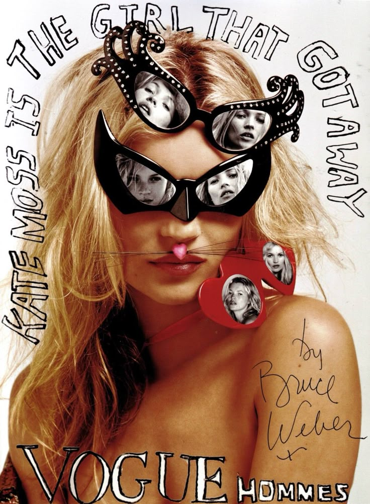
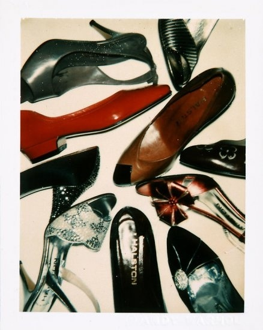
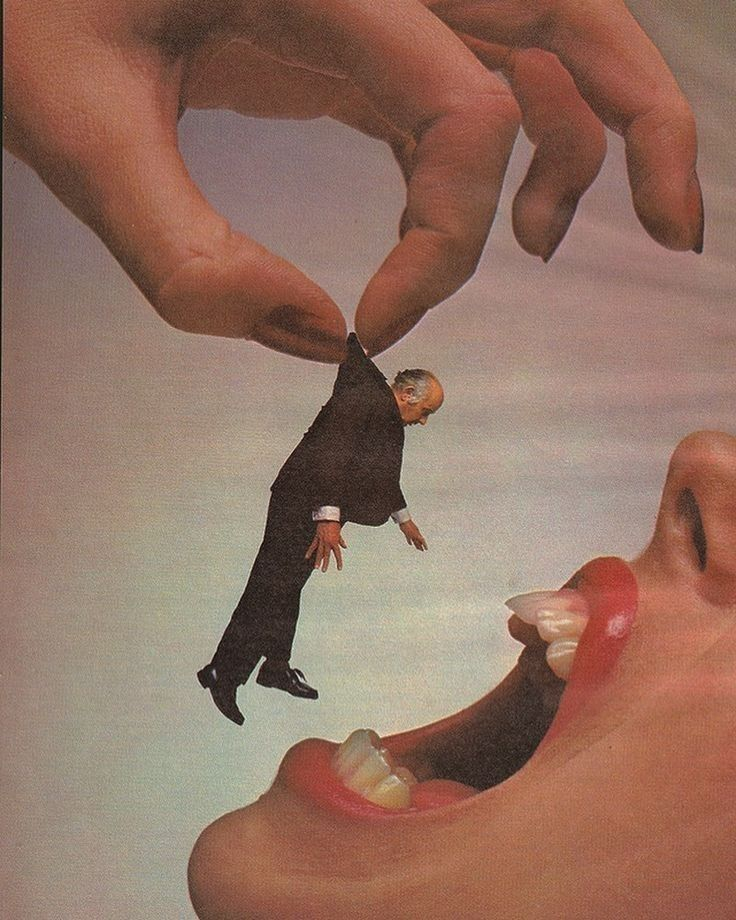
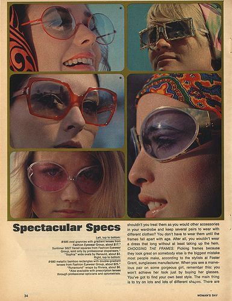
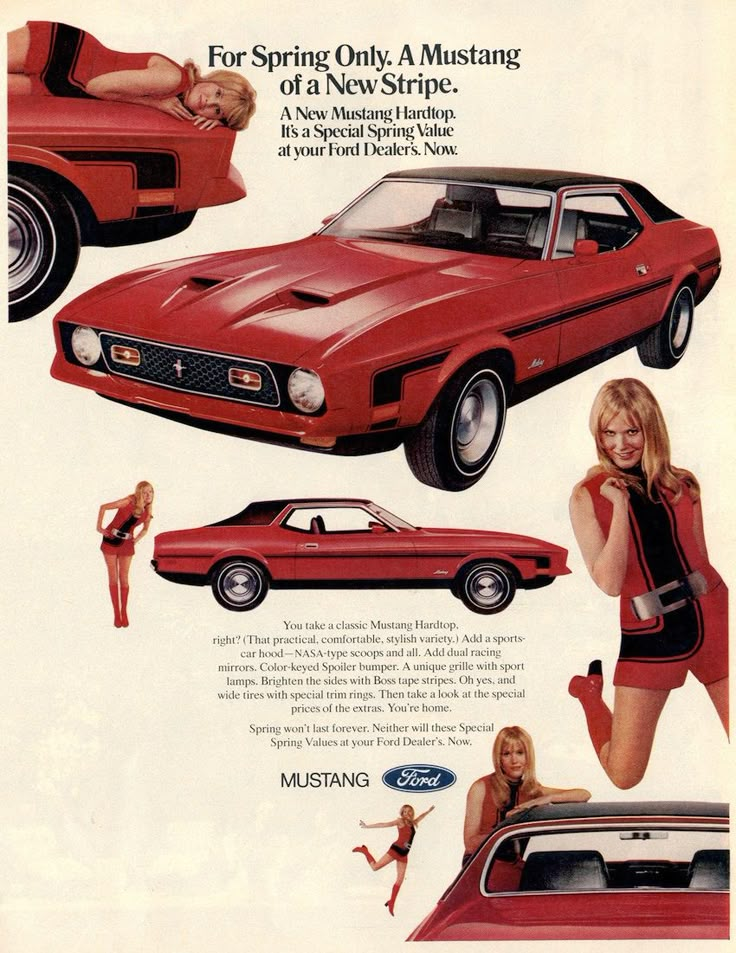
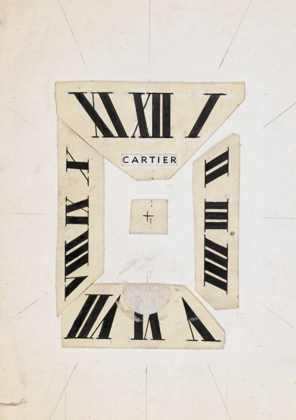

✩ ☾⋆ ✧ 𝙼𝚢 𝙿𝚛𝚘𝚓𝚎𝚌𝚝𝚜 ✮ ｡𖦹 ✩

Muse and Mess!
A love letter to undone beauty. Muse & Mess is where edge meets elegance-smudged eyeliner, tousled hair, and the quiet power of being real. Inspired by 90s icons like Kate Moss, this is beauty without the filter. Raw. Soft. Iconic.
grunge, maximalism, 90s and postmodernism..

Timeless Luxe in Every Step.
A vibrant celebration of vintage glamour and enduring elegance. This shot captures a pair of classic Chanel heels, worn but radiant, standing proudly against a splash of bold, colorful backgrounds. The photo honors the beauty of heritage fashion — where every scuff tells a story, and every step echoes timeless style. Old but gold, these shoes prove that true luxury never fades, it only gains character.
heritage class, old money, channel heels and elegance..

Maneater: Beware the Wild Side!
She’s got the claws, the attitude, and the appetite for chaos - watch out, this maneater doesn’t play nice! Equal parts fierce and fabulous, she’s here to slay… and maybe steal your last slice of pizza. Ready to roar through your day with a little sass and a whole lot of style!
#Maneater #FierceAndFunny #WildSide #QueenOfChaos

Groove & Glare: Big Shades, Bigger Attitude.
Step back into the 70s where the sunnies were massive, the vibes were groovy, and the confidence was through the roof. Channeling Twiggy’s iconic look with oversized sunglasses that say, “I see you—and I’m not impressed.” Whether you’re dancing under disco lights or just owning the sidewalk, these big shades bring all the drama and zero chill.
70s vibes, Twiggy style, big sunglasses, retro cool, disco fever..

For Spring Only: A Mustang of a New Wind!
Feel the rush of the season with this fiery red Mustang, embodying the spirit of fresh beginnings and unstoppable power. Perfectly tuned for spring adventures, it’s more than a car—it’s a bold statement of freedom, speed, and style. Drive into the new season with confidence and flair.
red Mustang, spring Mustang, Mustang 2025, muscle car, sports car, new season ride, Mustang performance, spring driving, stylish car, Mustang enthusiasts

Timeless Elegance: The Essence of Cartier.
This photograph captures the iconic sophistication of Cartier, showcasing the harmonious blend of classic design and contemporary luxury. The watch's refined lines and exquisite craftsmanship reflect Cartier's enduring legacy in the world of haute horology. Set against a backdrop that complements its elegance, the image invites viewers to appreciate the timeless beauty and precision that define Cartier's creations.
Cartier’s timeless watch design, featuring bold Roman numerals and minimalist geometry.